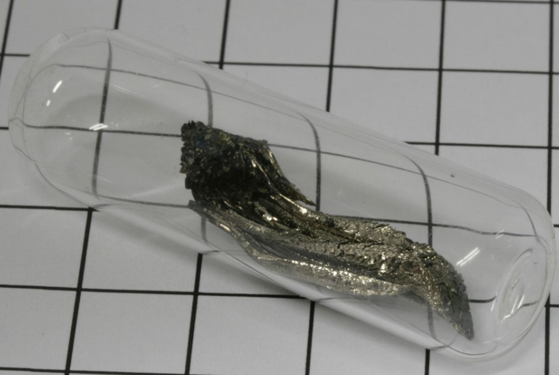

Дубний

Ду́бний (химический символ — Db, от лат. Dubnium) — радиоактивный искусственно синтезированный химический элемент 5-й группы (по устаревшей классификации — побочной подгруппы пятой группы, VB) седьмого периода периодической системы химических элементов Д.И. Менделеева с атомным номером 105.
Изотоп 260Db получен американским физиком А. Гиорсо с сотрудниками в 1970 г. (Беркли, штат Калифорния, США) в реакции 249Cf с ускоренными ионами 15N. Приоритет открытия дубния делят СССР и США. Название «дубний» (по месту открытия) утверждено в 1997 г. ИЮПАК. Употребляемые прежде названия и символы этого элемента «нильсборий», Ns (Россия) и «ганий», Ha (США) не утверждены.
Создание дубния - сложный и дорогостоящий процесс, который требует продвинутой технологии и оборудования.В настоящее время проводятся исследования по возможности использования дубния в качестве катализатора в реакциях окисления.